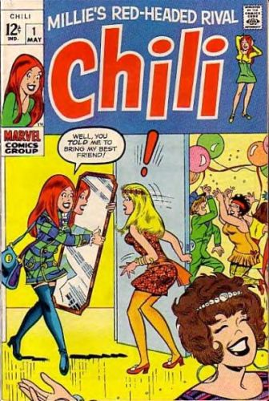

Chili

Series: on-going, #1-26
Publisher: 1969 Marvel
Issue #1
- The Lady and the Lipstick! Chili is selected to be the new Lily Lovey lipstick girl, but she runs into a bit of a snag when she goes out to buy some Lily Lovey lipstick to wear to the interview.
- Two Gals and a Gown! Chili and Millie fight over who will get to buy an "exclusive" gown.
- Friends Till the End! When Chili gets up in the morning she decides to turn over a new leaf and be nice to Millie.
- The Party Smarty. When Chili is not invited to Millie's hush-hush party she decides to ruin it and tell everyone else that the party has been cancelled. Scripts by Stan Lee, art by Stan Goldberg.